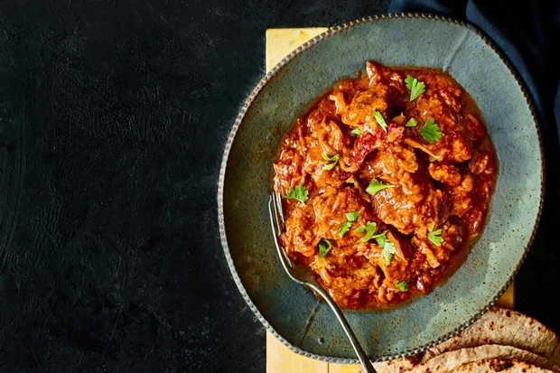
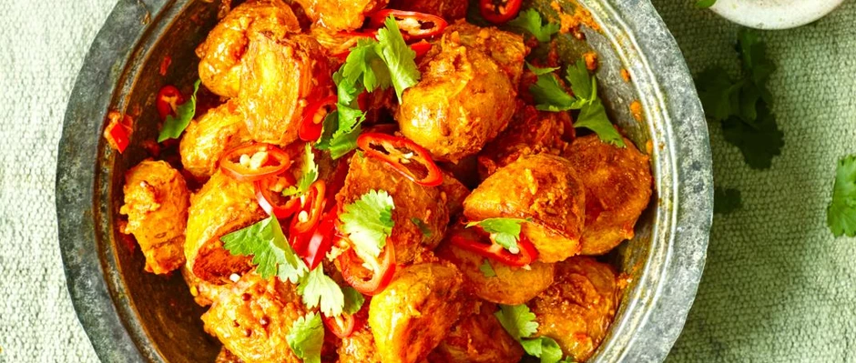

Rajasthani lamb curry (laal maas)
Maunika Gowardhan's trip to Udaipur in Rajasthan was made really special by meeting locals from the region and discovering this stellar recipe for a traditional laal maas – a slow-cooked lamb curry with bone marrow, chillies and spices.
Ingredients:
- garlic 8 cloves, roughly chopped
- ginger 5cm piece, roughly chopped
- amb shoulder 750g, excess fat trimmed, cut into bite-sized pieces (see cook’s notes)
- kashmiri chilli powder or mild chilli powder 1½ tsp, (see cook's notes)
- whole dried kashmiri chillies 10, soaked in 400ml of warm water (see cook's notes)
- vegetable oil 8 tbsp
- onion 4, thinly sliced
- ghee 3 tbsp
- whole dried red kashmiri chillies 3
- bay leaves 3
- ginger 2cm piece, cut into slivers
- tomato purée 1 tbsp
- lamb stock or water 600ml
- garam masala ½ tsp
- coriander chopped, to serve
- chapattis or naans to serve
Directions:
- Blend the garlic, ginger and 2-3 tbsp of water to a smooth paste. Put 1 tbsp in a large mixing bowl with the lamb and chilli powder. Mix and leave to marinate for 2-3 hours or overnight.
- Blend the whole chillies to a paste with 3 tbsp of their soaking liquid.
- Heat the oil in a large frying pan over a medium heat. Fry the onions for 45-50 minutes stirring often, until the onions brown evenly. Drain in a sieve and set aside.
- Heat the ghee in a large heavy pan over a medium heat. Fry the whole dried chillies and bay leaves for a few seconds, then add the cooked onions and stir for a minute. Add the lamb and cook for 6-8 minutes, stirring well and scraping the bottom of the pan as you go. Add the ginger slivers and the remaining garlic-ginger paste, along with the kashmiri chilli paste, and fry for a couple of minutes. Add the stock or water, season and add the lamb bones, if using. Simmer, uncovered, for 30 minutes.
- Add the tomato purée and simmer for a further 40-45 minutes over a medium heat with a lid on, stirring halfway through, until the sauce is rich and glossy and coats the lamb. Turn off the heat then stir in the garam masala and finish with coriander sprinkled over. Serve with chapattis or naans for soaking up the gravy.
- Serve with boiled rice and nan bread
Jersey Royal bombay potatoes
Ingredients:
- Jersey Royals or new potatoes 800g, halved or quartered
- garlic 4 cloves, chopped
- ginger a thumb-sized piece, chopped
- vegetable oil 2 tbsp
- cumin seeds 1½ tsp
- black mustard seeds 1½ tsp
- ground turmeric 1 tsp
- red chilli 1, deseeded (if you like) and thinly sliced
- garam masala 1 tsp
- coriander a small bunch, roughly chopped
- 1 tbsp salt, or to taste
- lime 1, wedged to serve
Directions:
- Cook the potatoes in a large pan of lightly salted boiling water until tender to the point of a knife, then drain well.
- Tip the garlic and ginger into a blender with 4 tbsp of water then whizz until smooth. Add the tomatoes and whizz again briefly.
- Heat the vegetable oil in a frying pan over a medium-high heat and fry the cooked potatoes for 10-15 minutes, tossing now and again, until really crispy.
- Turn down the heat and add the cumin and black mustard seeds, and the ground turmeric, and fry for a minute. Tip in the garlic, ginger and tomato purée with three quarters of the red chilli, and cook gently for 10 minutes until thickened. Stir in the garam masala and season well.
- Tip into a serving dish and top with the coriander leaves, remaining red chilli and lime wedges for squeezing over.
- Serve with nan bread